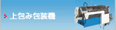

このページのコンテンツには、Adobe Flash Player の最新バージョンが必要です。
2017国際食品工業展（FOOMA JAPAN）
詳しくはこちら
日時：2017年6月13日（火）〜6月16日（金）の4日間
「東京ビッグサイト」にて開催致しました。
多数の方のご来場有難うございました。
2017モバックショウ（MOBAC SHOW）
詳しくはこちら
2017年2月22日（水）〜25日（土）の4日間
「インテックス大阪」にて開催致しました。
多数の方のご来場有難うございました。
2016国際食品工業展（FOOMA JAPAN）
詳しくはこちら
2016年6月7日（火）〜10日（金）の4日間
「東京ビッグサイト」にて開催致しました。
多数の方のご来場有難うございました。
2016中部パック
詳しくはこちら
2016年4月13日（水）〜16日（土）の4日間「ポートメッセなごや」
にて開催致しました。
多数の方のご来場有難うございました。
社長挨拶
代表取締役社長交代のご挨拶
2015日本国際包装機械展（JAPANPACK）
詳しくはこちら
2015年10月13日（火）〜16日（金）の4日間「東京ビッグサイト」
にて開催致しました。
多数の方のご来場有難うございました。
2015国際食品工業展（FOOMA JAPAN）
詳しくはこちら
2015年6月9日（火）〜12日（金）の4日間「東京ビッグサイト」
にて開催致しました。
多数の方のご来場有難うございました。
2015モバックショウ（MOBAC SHOW）
詳しくはこちら
2015年2月18日(水）〜21日（土）の4日間「幕張メッセ」
にて開催致しました。
多数の方のご来場有難うございました。
2014国際食品工業展（FOOMAJAPAN）
詳しくはこちら
2014年6月10日（火）〜13日（金）の4日間「東京ビッグサイト」
にて開催致しました。
多数の方のご来場有難うございました。
2014中部パック
詳しくはこちら
2014年4月9日（水）〜12日（土）の4日間「ポートメッセなごや」にて開催致しました。
多数の方のご来場有難うございました。
2013日本国際包装機械展（JAPANPACK）
詳しくはこちら
2013年10月15日（火）〜18日（金）の4日間「東京ビッグサイト」にて開催致しました。
多数の方のご来場有難うございました。
2013国際食品工業展（FOOMAJAPAN）
詳しくはこちら
2013年6月11日（火）〜14日（金）の4日間「東京ビッグサイト」にて開催致しました。
多数の方のご来場有難うございました。
角折り包装機に変わる新たな小型密封ピロー包装機
GW-7型 小型密封ピロー包装機
2013モバックショウ（MOBAC SHOW）
詳しくはこちら
2013年3月6日(水）〜9日（土）の4日間
インテックス大阪 2号館 No.216 にて開催致しました。
角折り包装機に変わる新たな小型密封ピロー包装機
「GW-7」
を初出展致しました。
その他 横ピロー包装機「KBF-7000V」 小型横ピロー包装機「KBF-700e」
縦ピロー包装機「KBF-6000Xe」を出展致しました。
多数の方のご来場有難うございました。
ProPak Asia 2012
詳しくはこちら
2012年6月13日（水）〜16日（土）の4日間
「タイ Bangkok International Trade ＆ Exhibition Centre」にて開催致しました。
多数の方のご来場有難うございました。
2012国際食品工業展（FOOMAJAPAN）
詳しくはこちら
2012年6月5日（火）〜8日（金）の4日間「東京ビッグサイト」にて開催致しました。
多数の方のご来場有難うございました。
2012中部パック
詳しくはこちら
2012年4月11日（水）〜14日（土）の4日間「ポートメッセなごや」にて開催致しました。
多数の方のご来場有難うございました。
より高機能で確実な新機構搭載
横ピロー包装機 KBF-7000V
2011国際包装機械展（JAPAN PACK）
詳しくはこちら
2011年10月18日（火）〜10月21日（金）の4日間、東京ビッグサイトにて開催致しました。
多数の方のご来場有難うございました。
2011国際食品工業展（FOOMA JAPAN）
詳しくはこちら
2011年6月7日（火）〜6月10日（金）の4日間、東京ビックサイトにて開催致しました。
多数の方のご来場有難うございました。
2011モバックショウ（MOBAC SHOW）
詳しくはこちら
2011年2月16日（水）〜19日(金）の4日間、幕張メッセにて開催致しました。
多数の方のご来場有難うございました。
時代を見据えて新たな発想へシフトする。
目指してきたのは「シンプル」です。
中低速縦ピロー包装機KBF-6000Xe
コンパクトで使いやすい。小さいけれど高性能。
時代を見据えた新発想。
小型横ピロー包装機 KBF-700e
2010国際食品工業展（FOOMAJAPAN）
詳しくはこちら
2010年6月8日（火）〜11日(金）の4日間、東京ビッグサイトにて開催致しました。
多数の方のご来場有難うございました。
2010中部パック
詳しくはこちら
2010年4月14日（水）〜17日(土）の4日間、ポートメッセなごやにて開催致しました。
多数の方のご来場有難うございました。
横ピロー包装機
５軸サーボを搭載した最新ヨコピロー包装機。食品・日用雑貨・工業製品などに採用
縦ピロー包装機
スナック・キャンデー・雑穀・粉など、あらゆる商品のピロー包装に
上包み包装機
和菓子、洋菓子などのお菓子を初めとして日用雑貨・工業製品への使用
国内外に約１００００台の納入実績を誇る角折り包装機
ダンボール製函機/封函機
コンパクトサイズでしかもマイコン制御により９９種類までプリセットが可能
サイズチェンジも自動で行います
カップシール蓋締包装機
定量充填機と連動により、味噌を初めとしてペースト状商品の定量充填から蓋締めまで
一連の作業を自動化